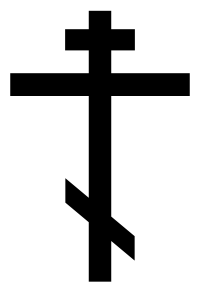

Здесь Вы можете заказать поминовение в Свято-Троицком Селенгинском монастыре.
- Введите имена (до трех имен за одну транзакцию), крещенных в Православии христиан; укажите срок поминания;
- Проверьте корректность введенных данных;
- Осуществите пожертвование (без дополнительной комиссии) с банковской карты или Яндекс.Денег.
Спаси Вас Господь!

Проскомидия — это самое важное поминовение о живых и усопших. На Литургии священник из просфор вынимает частицы о здравии и упокоении тех, за кого верующими подавались записки.
Вынутые из просфор частицы в конце Литургии погружают в Святую Чашу, в это время священник произносит слова: «Омый, Господи, грехи поминавшихся зде Кровию Твоею честною, молитвами святых Твоих». Частицы соприкасаются с Телом и Кровью Христа Спасителя.
В этом-то и состоит сила и действенность изъятия частей из просфор.
Тут не просто молитва за того или иного живого или умершего, а очищение грехов этой самой бескровной Жертвой. Тут каждая часть, проникаясь Кровью Спасителя, делается уже предстательницей пред Ним за того, о чьем имени она вынута.
Вот почему вынуть из просфоры частицу о живом или умершем за Литургией в Православной Церкви всегда считалось самым спасительным и плодотворным действием.
2016-2017 © antidor.ru